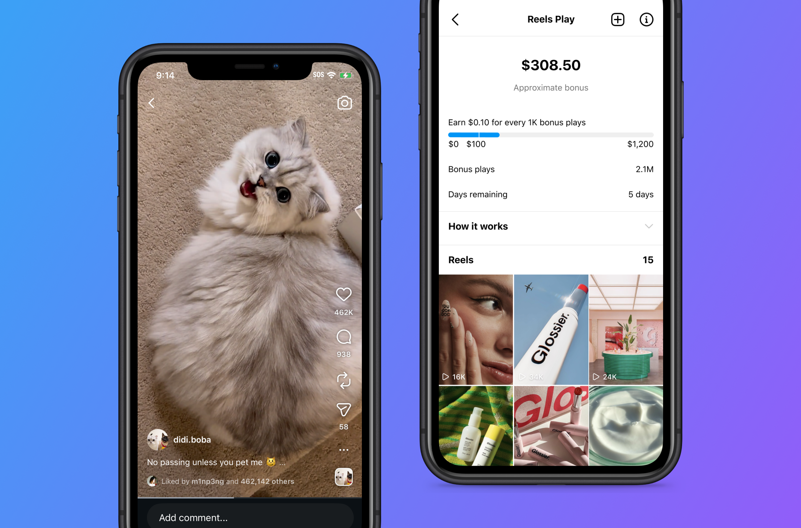
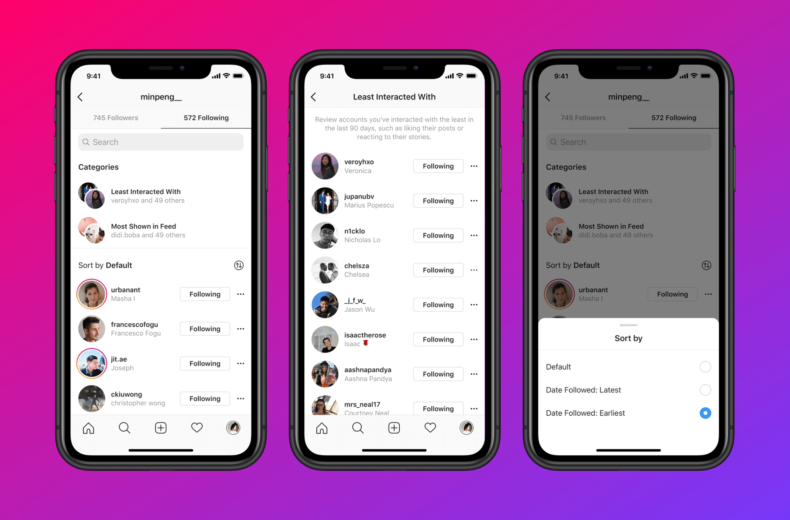
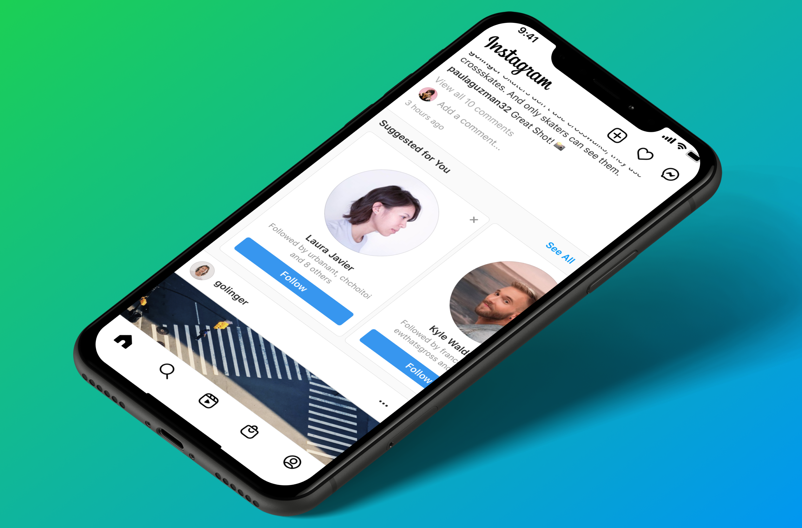
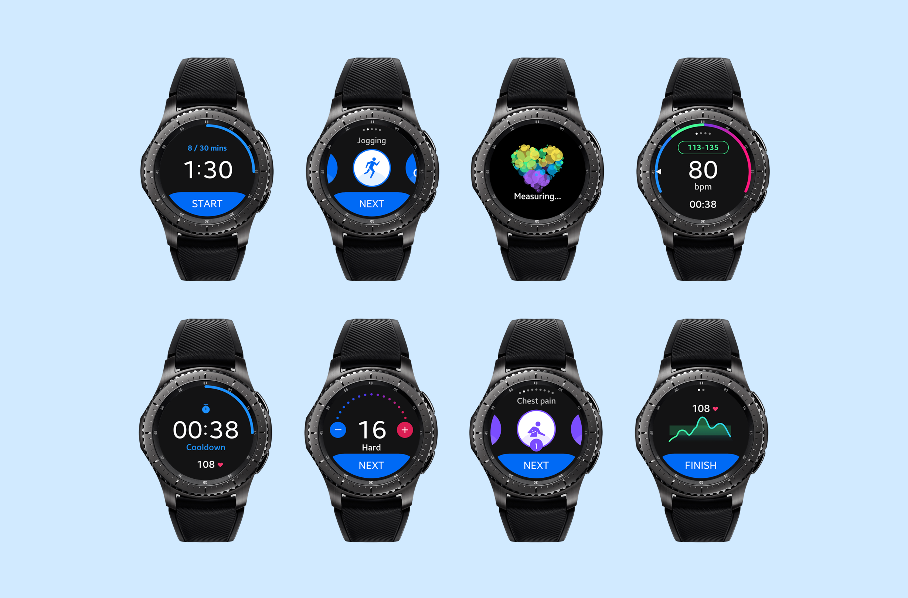

Led the design and launch of Netflix’s first rejoin offer for former members, introducing a one-month free upgrade to a higher-tier plan. Significantly increased sign-up conversion, driving millions in incremental revenue.
Designed and launched the onboarding experience for FigJam, making it more interactive, playful, and engaging. The new onboarding experience increased user engagement and retention.
Designed and launched the feature announcement modal for Figma Config 2024, redefining how new features are introduced through an interactive, in-product format. Increased feature visibility and engagement, and set a new pattern that influenced modal design across the industry.
Led the design of TikTok Shop’s Creator Center, the primary surface for creators to onboard, track growth, and improve performance. Partnered with 5 PMs across key growth and success areas to drive a cohesive experience, and collaborated with an external agency to art direct and produce tutorial videos that supported creator education and activation.
Led the redesign of Instagram’s onboarding flow to solve the feed cold start problem — ensuring new users see meaningful, personalized content from day one.

Designed and launched Instagram Reels Bonus, a monetization program that pays creators based on views. Enabled creators to more effectively monetize their content and drove a 20% increase in Reels production.
Designed and launched Instagram’s first Suggested Users unit in Stories. Pioneered the format and introduced the iconic shuffle interaction that went on to inspire recommendation designs across the industry.

Led Instagram’s Graph Management initiative to make it easier for users to curate their social graph by managing who they follow and who follows them. As the first social platform to actively encourage unfollowing and removing followers, we aimed to foster more authentic relationships — ultimately increasing users’ likelihood to share and engage.
The work was featured in The Verge ↗, TechCrunch ↗, etc.
Conceptualized, designed, and launched Unfollow Chaining at Instagram, enabling users to easily unfollow clusters of similar accounts surfaced at the moment of intent. Streamlined graph management, reduced effort, and improved feed relevance by helping users quickly move past outdated interest phases.

Designed and launched the Suggested Users unit in the Instagram home feed, helping users discover people and accounts they care about. This unit alone contributed to ~30% of all connections made on Instagram.

Designed and launched Samsung's first award-winning B2B healthcare service solution, Samsung HeartWise, to make cardiac rehab more affordable and scalable.
Won the Red Dot Design Award in 2018. Featured in WSJ.
If you’ve scrolled this far, we’re basically friends now.
I love real people problems, delightful little details ✿, and playful UI that makes you go ( ,,◕ ̲ ◕,, ). I believe everything can be made better with good design and a dash of humor.
Outside of work, you can usually find me taking photos with my film camera, planning my next trip, organizing tiny corners of my home, or falling into a social media rabbit hole for a little too long.